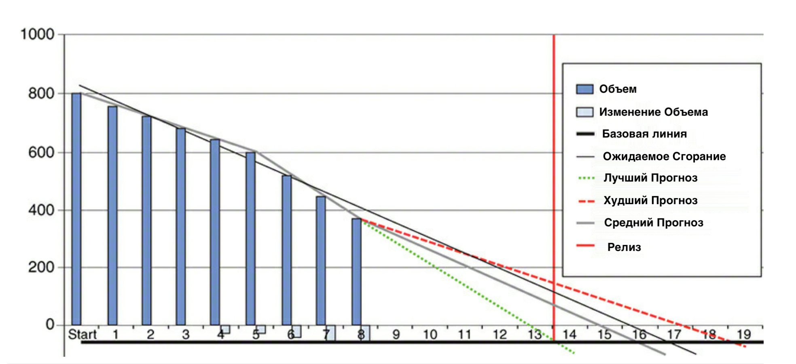
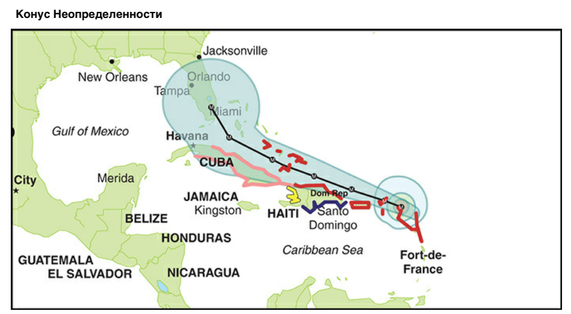

Хорошо функционирующий Бэклог Продукта содержит всю информацию необходимую для отчетности.
Скрам помогает получать ценный Инкремент Продукта в каждом Спринте и открывает широкий спектр возможностей, когда дело доходит до отчетности.
Основы Прогнозирования
Если у вас есть только один Бэклог Продукта и он постоянно уточняется, то все, что вам нужно для отчетности — этот Бэклог Продукта и скорость (velocity)работы Команды Разработки.

Рисунок 8-12. Диаграмма Burn-down помогает делать прогнозы.
На примере релизной диаграммы сгорания на рисунке 8-12 показан прогресс в течение нескольких Спринтов в работе над крупным продуктом с тремя Командами Разработчиков. Бэклог Продукта был огромным, и, как вы видите, Командам Разработчиков понадобилось около пяти Спринтов, пока они не получили (в срочном порядке) достаточно знаний о сфере продукта, технологии и о том, как лучше всего работать Командам Разработчиков. Начиная с четвертого Спринта, размер Бэклога Продукта вырос. Это была либо новая функциональность (Объем), либо обновленная оценка благодаря улучшенному пониманию.
Тонкая черная линия - ожидаемый тренд сгорания объема работ (основанный на регрессии методом наименьших квадратов1) по всем известным точкам данных (все Спринты). Более толстая серая линия представляет собой среднюю скорость, прогноз, основанный на предыдущих данных (последняя известная точка данных это последний Спринт). Пунктирные линии это средние три самыми низкие и самые высокие скорости работы команд за Спринт. Распределение этих линий часто называют конусом неопределенности, который уходит своими корнями в предсказания траектории урагана. Чем дальше вы смотрите в будущее, тем менее точными будут ваши прогнозы.

Рисунок 8-13. Предсказание ураганов и конус неопределенности.
Прогнозирование прогресса развития вашего продукта во многом напоминает предсказание ураганов (см Рисунок 8-13):
Каждая тропическая система получает конус прогноза, чтобы помочь людям лучше понять, куда направляется ураган.
Конус предназначен для демонстрации возрастающей неопределенности прогноза с течением времени.
Исходя из предыдущих ошибок прогнозов [за предыдущие пять лет], можно ожидать, что вся трасса тропического циклона останется в пределах конуса около 60-70 процентов времени. Конус становится шире с течением времени по мере увеличения неопределенности прогноза2.
Замените "Тропическую систему" на "Бэклог Продукта" и "людей" на "заинтересованные стороны", и прогнозирование ураганов превратится в понятный вам мир. Никаких гарантий и при попытке прогнозировать разработку продукта происходят странные вещи (область неизвестное-неизвестное), как это случается с прогнозом погоды. Ураганы избегают конуса неопределенности от 30 до 40 процентов времени. Никогда не знаешь наверняка каким путем пойдет ураган, пока он не начнется. Однако, собирая эмпирические данные о том, где побывал ураган, вы создаёте более точный прогноз. Точно так же, правильно используя Скрам, вы можете собирать данные о том, что "Готово", чтобы ваши прогнозы стали еще точнее.
Используйте конус неопределенности чтобы напомнить заинтересованным сторонам о неопределенности, но не для того чтобы демонстрировать уверенность.

Мир управления проектами часто ссылается на "конус неопределенности", который подразумевает, что чем больше вы анализируете, тем более точными будут ваши прогнозы. Эту идея создал Барри Боэм3, а затем подхватил Стивом Макконнелл4, но эта идея была в основном развенчана5. В общении с клиентами мы постоянно используем "конус неопределенности" и считаем его отличным инструментом для демонстрации того, что было "Готово", сообщая о неопределенности будущего и отходя от традиционных отчетов о статусе, таких как отчеты со сфетофорами "Красный-Желтый-Зеленый" (RAG: Red-Amber-Green).
Самое время напомнить вам, что эти прогнозы полезны, но они лишь косвенное доказательство ценности. Думайте о них как о пройденных километрах (прогрессе). Прогноз не показывает в правильном ли направлении вы идете (а может по кругу?). Есть более прямые показатели ценности,
например, метрики из главы 3.
Прогнозирование
Как показано на рисунке 8-14, дата релиза запланирована на конец тринадцатого Спринта. Так как этот график сгорания релиза был создан после восьмого Спринта, у команды есть еще пять Спринтов, чтобы завершить Бэклог продукта. Насколько это вероятно и какие еще варианты доступны?
- Изменить дату выпуска – Каковы будут последствия переноса даты? Можем ли мы конкретизировать сейчас ожидания относительно этой возможности? Можем ли мы разработать план на случай непредвиденных обстоятельств?
- Увеличить скорость чтобы завершить весь объем задач – Можем ли мы добавить людей в Команду разработчиков? Не слишком ли поздно, чтобы что-то менять? Можем ли мы отвлечься от решения других вопросов? Можем ли мы улучшить поддержку и инфраструктуру? Можем ли мы привлечь на помощь еще одну Команду разработчиков?
- Работать с объемом задач – Что абсолютно необходимо для текущего релиза – Минимально жизнеспособный продукт (MVP).
На рисунке 8-14 показан случай, где объем работы (Scope) был скорректирован, так как дата не подлежала обсуждению.
Скорее всего, будет «сделано»
Возможно не войдет в релиз
Рисунок 8-14. Прогноз объема на базе графика
Изучив график сгорания релиза, вы можете решить, что серая линия вполне разумный прогноз. Так как дата релиза зафиксирована в конце тринадцатого Спринта, вы можете провести вертикальную линию из нижней точки области вверх пока не коснетесь серой линии. От этого пересечения вы проводите горизонталь в левую сторону, пока не дотронетесь до Бэклога продукта. Область выше, вероятно, будет завершена ("Сделано") к дате релиза. Область ниже, вероятно, не будет завершена.
Это хорошая информация для принятия осознанных решений Владельцем продукта в отношении объема (Scope). Например, чтобы сэкономить усилия, функциональность в части "Сделано" может быть "упрощена" и тем самым создаст пространство для функциональности — "в настоящее время это делать не будем". Другой вариант заключается в отказе от использования менее срочных функций до будущего релиза. Это трудная работа для Владельца продукта, но, как и большинство вещей в жизни, она сводится к компромиссам.
В целом, ценность использования плана релизов, подобных этим, заключается в визуализации и доведении существующего уровня неопределенности (прозрачность). Это позволит Команде Скрама, а также заинтересованным сторонам рано или поздно встретиться с реальностью своей ситуации (проинспектировать), а затем приступить к разработке планов по корректировке (адаптации).
Прогнозирование по нескольким продуктам
Как вы можете сравнить Скрам Команды, работающие над разными продуктами?
Здесь все зависит от ваших намерений. Если цель состоит в том, чтобы выяснить, какие Скрам Команды показывают лучшую скорость, ответ: "Вы не можете и даже не пытайтесь." Каждая Скрам Команда имеет свой собственный уникальный метод для оценки своего Бэклога, не говоря уже о различных уровнях сложности задач и потенциала к их достижению. Как упоминалось в 3 главе, это также приведет к появлению внешних мотивов, которые могут привести к искажению данных.
Однако если цель сравнения заключается в сопоставлении прогресса Команд таким образом, чтобы лучше использовать потенциал и распределять работу, тогда может быть такой способ есть.
Признавая, что каждая команда имеет свой собственный относительный способ оценки, вы можете удалить фактические данные и вместо этого сосредоточиться на векторе скорости, чтобы получить доступ к обзору прогресса. Независимо от того, что представляет собой каждое отдельное базовое подразделение Команды Разработчиков, вектор останется сопоставимым.
Предположим, у вас есть несколько связанных субпродуктов, каждый со своей собственной Скрам Командой. Вы можете создавать релиз на каждый субпродукт и помечать их как на рисунке 8-15. Так вы достигаете прозрачности в оценке субпродукта с наибольшим риском того, что он не будет выполнен вовремя, так как он находится в критической точке.
Субпродукт А, Субпродукт Б, Субпродукт С, Субпродукт Д.
Рисунок 8-15. Использование единых векторов графиков сгорания релиза для сравнения прогресса.
С помощью этих нейтральных по значению данных вы можете принимать соответствующие решения и активно руководить разработкой.
Вы можете решать о переводе людей с субпродукта С к субпродукту В или перемещении элементов Бэклога субпродукта В в субпродукт С, так как С прекрасно продвигается прямо сейчас. Вы можете принять решение нанять дополнительно человека, чтобы помочь с тестированием. Варианты бесконечны и зависят они только от ваших задач. Независимо от то, что вы решите сделать, следующий Спринт обеспечивает прозрачность, которая вам нужна для инспекции и последующей адаптации.
Следует повторить, что этой информацией можно злоупотребить в том случае, если она связана с деятельностью Скрам Команды. Она может быть полезной, если ее рассматривать прозрачной и нейтральной с целью инспекции и адаптации.
ПРОЦЕНТ ВЫПОЛНЕНИЯ
Простой для понимания, но не всегда простой в вычислении метрикой является процент завершения (РоС).
Если вам нужно закрыть 120 банок солений, то разумно предположить, что вы на 50 процентов выполнили задачу, как только вы закроете 60-ю банку.
Однако, когда ваш проект состоит из ряда взаимозависимых шагов, каждый из которых отличается от следующего, тогда эта задача усложняется.
Представьте себе, что вы должны приготовить большой ужин, с множеством последовательных и уникальных задач, единственный реальный способ оценить РоС основан на потраченном и оставшемся времени. Если вы отвели себе два часа на приготовление ужина и уже час как вы в процессе, как можно оценить свой PoC? Если вы уже готовили один и тот же ужин много раз до этого, то вы можете предположить, что 50 процентов готово. Однако, если вы готовите обед в первый раз и не уверены в своей первоначальной двухчасовой оценке, то 50-процентный показатель РоС вводит в заблуждение.
С более традиционными Waterfall процессами, РоС больше похож на пример приготовления ужина выше, который только отражает затраченное время. На рисунке 8-16 показан пример, в котором анализ полностью завершен, а дизайн завершен на 80 процентов, таким образом "проект" в целом завершен на 37 процентов.
Проектирование 80%, Всего 37%
Анализ, Проектирование, Производство, Тестирование
Рисунок 8-16. Процент выполнения измеряемый тем сколько прошло времени.
Такого рода отчеты составляются даже до начала каких-либо разработок и редко точно отражают, насколько они действительно полны, особенно при создании чего-то неизвестного и сложного.
При использовании Скрам, PoC может быть более значимым показателем. Как и банки с соленьями, Команда Разработчиков на самом деле дорабатывает функции каждый Спринт. Слова о том, что вы завершили разработку на 72 процента должны иметь больше смысла: как функции могут быть завершены на 72 процента и готовы к запуску в производственную среду, если они еще не там.
Вы также можете сделать это более детально с дополнительными инициативами. На рисунке 8-17 показан пример, в котором "Функция (Инициатива) по проведению онлайн-аукционов завершена на 67%". Шесть из девяти элементов Бэклога продукта на самом деле "Готово".
Функции (Инициативы) Продукта.
Онлайн акции.
Регистрационная форма нового пользователя.
Отслеживание посылки (FedEx)
Интеграция с Amazon.com
Рисунок 8-17. Процент выполнения на базе функций (инициатив).
Подумайте о добавлении таких метрик (показателей) в ваши отчеты. Они имеют большое значение для ваших заинтересованных сторон, которые скорее всего больше думают о ценных Инициативах, чем об анализе, проектировании, разработке и так далее. Обзор Спринта – отличная возможность их представить.
МОДЕЛИРОВАНИЕ ПО МЕТОДУ МОНТЕ-КАРЛО
Моделирование методом Монте-Карло — это метод снижения рисков для задач, которые требуют числового ответа, но слишком сложны для аналитического решения. Вместо этого он применяет случайные числа и статистику вероятностей для изучения вероятности каждого возможного исхода решения от одной крайности к
другой.
Этот метод используется в физике, химии, исследованиях, бизнесе и медицине, и даже применялся при создании водородной бомбы.
При оценке Бэклога Продукта методом Монте-Карло мы предполагаем, что
перспективу реализации каждого элемента Бэклога Продукта можно оценить от “оптимистично” до “пессимистично”.
Мы присваиваем случайную оценку от “оптимистичной” до “пессимистичной” каждой задаче Бэклога Продукта, значения суммируем. Полученная сумма представляет собой точку на оси x (см. рис. 8-18). Ось У представляет диапазон сумм с одинаковым значением. Такое моделирование выполняется не менее 10 000 раз.
Результирующий график представляет собой распределение по времени, где площадь под графиком — это вероятность завершения задачи к этому времени.
Перевод: ось y вероятность (частота :) )
ось x время
Ось У вероятность сумм с одинаковым значением, ось Х — время реализации Бэклога продукта (суммы задач) от “оптимистичной” к “пессимистичной”
50%, 95% вероятность
—------------------------------------------------------------------------------------------------------------------------
Рисунок 8-18 Распределение вероятностей на основе моделирования методом Монте-Карло
На горизонтальной оси распределения вероятности (время) есть две точки, представляющие статистический интерес: e50, где у вас есть 50-процентная вероятность того, что вы закончите; и e95, с 95-процентной вероятностью того, что вы закончите работу в срок.
Существует несколько доступных онлайн-инструментов, которые помогут в проведении подобных симуляций. Я разработал простой Ruby-скрипт, который выполняет эту работу за меня. Вы даже можете запустить моделирование методом Монте-Карло с помощью Microsoft Excel.
Как это поможет вам с клиентами, которые требуют дать прогноз по срокам и цене работ?
Вы можете применить этот метод при оценке относительного размера элементов Бэклога Продукта, заменив время на усилие/размер (effort/size) задачи. При этом вы признаете, что общее соотношение усилие/размер задачи еще не известны, даже если объем понятен.
На рис. 8-19 показано моделирование методом Монте-Карло, которое запускалось 100 000 раз для Бэклога Продукта в 72 элемента в диапазоне от 1 до 21 сторипоинта (story points).
Предположение о распределении для каждого элемента Бэклога Продукта выглядит следующим образом:
* Вероятность того, что оценка размера верна, составляет 75 процентов.
* Вероятность того, что это будет следующий больший размер, составляет 20 процентов, а следующий меньший размер - 5 процентов
(например, для элемента из 13 пунктов диапазон равен (5%) 8, (75%) 13, или (20%) 21; для элемента с 1 очком истории это было бы 1, 1 или 2).
Общий размер усилий при поставке ПО в Стори Поинтах
Стори Поинты
Красная вертикальная линия вероятность 50% реализации Бэклога Продукта
Ось У — количество симуляции с одинаковым значением
Ось Х — вероятность реализации Бэклога продукта (суммы задач) в Стори Поинтах
—----------------------------------------------------------------------------------------------------------------------
Рисунок 8-19 Пример использования симуляции Монте-Карло для проверки точности оценки (требуемых усилий/размера) элементов Бэклога Продукта.
В этом примере, допустим, вы выбираете 80-процентную вероятность того, что общее значение требуемые усилия/размер Бэклога Продукта составит не более 418 стори поинтов. Если в Бэклоге Продукта нет изменений, то по-прежнему существует 20-процентная вероятность того, что Бэклог продукта больше, чем вы думаете.
Теперь вы предполагаете, что у вас в общей сложности 418 стори поинтов и средняя скорость 33 Стори Поинта за Спринт.
Скорость работы также может меняться как показано на рис. 8-20, где последние восемь спринтов показывают разницу между 29 и 37 Стори Поинтами, которые были выполнены за Спринт.
Ось Х Спринты
Ось У стори поинты
Лучший = 37
Средний = 33
Худший = 29
—----------------------------------------------------------------------------------------------------------------------
Рисунок 8-20 Изменение скорости работы в разных Спринтах
У вас есть две группы данных: вероятность правильной оценки элементов Бэклога Продукта и средняя скорость , так что теперь у вас есть формула для расчета возможной даты завершения:
Время = (Количество Стори Поинтов Общее / Скорость работы Средняя) х Продолжительность спринта
Теперь вы можете провести моделирование Монте-Карло со 100 000 попыток, используя случайные числа от 29 до 37 стори поинтов. Вы вычитаете эту скорость работы из общего количества стори поинтов Бэклога Продукта — в данном
случае 418 — до тех пор, пока не достигнете нуля или ниже того. Вы вычисляете показатель для необходимого количества спринтов. Этот подход предоставляет вам ориентир производительности Спринта для того момента, когда будет завершено отставание в разработке продукта (см. Рис. 8-21): вероятность 50% в Спринте 14 и 95% в Спринте 15.
Работает ли это? Все зависит от вашей Команды Разработчиков, поскольку они выполняют оценку и саму работу. Чем менее стабильна команда разработчиков, тем меньше точность, что приводит к большей разнице в оценках и скорости работы.
Рисунок 8-21 Моделирование методом Монте-Карло для количества спринтов
Не позволяйте этой статистике вводить вас в заблуждение ложным чувством точности. Каждый раз, когда меняется Бэклог Продукта или Команда Разработчиков, вычисления необходимо проверять и переделывать. Это становится практически невозможным при нестабильной команде разработчиков. Никакая техника не может гарантировать вам уверенности, когда ваша команда постоянно изменяется.
Чем больше времени Команда Разработчиков получает для совместной работы, для выработки лучшего опыта, для извлечения уроков из своих прошлых ошибок, тем лучше они понимают предметную область продукта, тем надежнее они будут.
Вместо того, чтобы относиться к работе как к финансированию (спонсированию) продукта, думайте об этом как о финансировании (спонсировании) Команды Разработчиков, которая создает наилучший продукт с максимальной ценностью в рамках заданных ограничений.
Наш инструмент не будет оценивать, сколько времени займет ваш проект; все, что он сделает, это скажет вам, какую степень неопределенности нужно предполагать для с любой оценки, которую вы предложите.
— Том Демарко и Тимоти Листер
КАКОГО ЦВЕТА СКОРОСТЬ (VELOCITY) ВАШЕЙ РАБОТЫ?
Давайте предположим, что за последние два года у вас была стабильная команда разработчиков, которые стабильно набирали 100 баллов. Как Владелец Продукта, можете ли вы утверждать, что эта команда разработчиков генерировала одинаковую ценность в каждом Спринте за это время?
Ответ должен быть отрицательным. Ваша команда разработчиков, возможно, проделала такой же объем работы, но с таким же результатом? Менялся ли уровень инноваций в вашей команде с течением времени?
Это можно визуализировать с помощью категоризации (с помощью цветов, если вы не застряли на черно-белом, как в печатной версии этой книги) ваши элементы невыполненной работы по продукту и итоговая скорость работы (см. Рис. 8-22).
Структура скорости работы с течением времени
2 года назад, 100 баллов
1 год назад, 100 баллов
Сегодня, 100 баллов
(Разработка) функций,
(Неотложное устранение) сбоев,
Технологический долг,
(Развитие) инфраструктуры
________________
Рисунок 8-22 Распределение скорости по видам работ
(Разработка) функций это хорошо. Это то, что создает ценность, привлекая новых клиентов или удерживая старых.
(Работа по сокращению) технического долга не такой уж хороший сигнал. Однако с плохими решениями, принятыми в прошлом, все нужно бороться. Устранение технической задолженности должно помочь сократить количество переделок в будущем, чтобы вы могли сосредоточиться на более инновационных функциях.
(Развитие) инфраструктуры - это работа, которую вы должны выполнить, которая не вписывается ни в категорию разработки функций, ни в категорию работ по сокращению технического долга. Это может быть настройка кластеризованной базы данных с балансировкой нагрузки или обновление сред. Опять же, это должно помочь создать большую ценность в будущем.
(Неотложные работы по устранению ) сбоев — это всегда плохо. Они являются проявлением неспособности поставлять высококачественный продукт. Сбои в работе Продукта объединяют весь жизненный цикл поставки, начиная с разработки, улучшения, внедрения, тестирования и заканчивая релизом. Сбой может быть связан с ошибкой на любом из этих этапов.
В приведенном выше примере Команда Разработчиков работает так же хорошо, как и два года назад. Они по-прежнему обеспечивает производительность на уровне около 100 баллов.
Однако, мы видим, что собственно разработка резко снизилась, с 80 пунктов два года назад до всего лишь половины этого показателя, 40 пунктов, сегодня. Борьба с техническим долгом и сбоями соответственно возросла.
Инфраструктура часто выше в начале и со временем уменьшается; она никогда не исчезает полностью. Важно поддерживать инфраструктуру и архитектуру в надлежащем состоянии.
Важным выводом здесь является тщательный мониторинг этих цифр, поскольку эта закономерность является обычным явлением и ее слишком легко замаскировать. Само значение числа не так важно, как тенденция к изменению с течением времени,
что может указывать на то, улучшается ли ваша работа или становится хуже. Рассматривайте данные в вашем конкретном контексте, создавайте прозрачность вокруг них и принимайте решения исходя из этого.